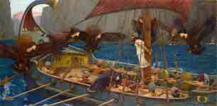

Homère nous fera le plaisir de nous lire l'introduction de son immense poème épique, le dernier vendredi de ce mois.

Rencontre post-moderne avec un écrivain facétieux
La circonfèrence à beau être nulle part et le centre partout, l'écrivain post-modern Etienne Lechalbe nous rendra une visite surprise à l'heure et au lieu de son choix.